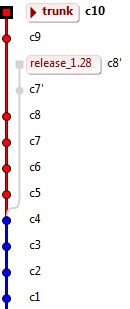
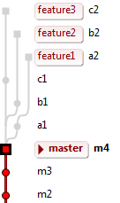
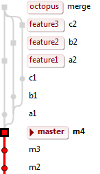

Continuous delivery chez
LesFurets.com
LesFurets.com
Equipe IT de 20 personnes
Développement en interne
Agile
Les acquis
Intégration continue
Git
SCRUM

1 release/mois
patches sur la branche
Cahier des charges :
Avoir toujours un état stable
Commiter librement
Tester en continu
Livrer facilement
L'Octopus

une branche
master
en prod
une branche
feature
par ticket

Merge
octopus
des branches feature
Buildable, deployable
Détecte les conflits
Garantit la livraison
Proof of concept
20 developpeurs, 10 000 classes